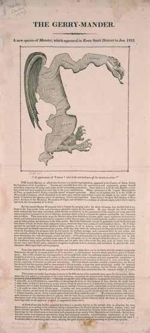

A cartoon pinned ‘gerrymander’ on a governor who barely touched the map
In 1812 a Boston newspaper redrew Elbridge Gerry's contorted Essex district as a winged monster and welded his surname to salamander.
To divide a state or region into election districts in a way that gives one political party an unfair advantage.1
A district drawn to keep the senate
On 11 February 1812, Governor Elbridge Gerry signed a Massachusetts law that redrew the state's senate districts.2 His Democratic-Republican allies in the legislature had drawn the new lines to pack Federalist voters into a few districts and thin them across the rest, and there is little evidence that Gerry wrote the plan or even strongly backed it.2 In that year's senate election the Republicans took about 49 percent of the vote and 29 of the 40 seats.3 One of the redrawn districts, Essex South, wound through the county in a long, jointed shape that looked, its opponents said, more like an animal than a constituency.2
Who drew the salamander
On 26 March 1812, the Boston Gazette answered with a cartoon. An artist added a head, wings, and claws to the outline of the Essex South district and named the creature the Gerry-mander, welding the governor's surname to salamander.4 Merriam-Webster dates the first known use of the word, as both noun and verb, to that year.1
Who drew it is less settled than the drawing is famous. The documented illustrator is Elkanah Tisdale, on the strength of a nineteenth-century memorandum that John Ward Dean printed in the New England Historic and Genealogical Register, recording a February 1812 dinner at the Boston merchant Israel Thorndike's house where Tisdale sketched wings onto the map.2 The popular retelling credits the portrait painter Gilbert Stuart. The Massachusetts Historical Society lists the drawing only as attributed to Stuart and to Washington Allston, and the fuller account finds the Stuart version less credible.54 Who first spoke the word is unsettled too: several Federalist opponents of the law are credited, among them the poet Richard Alsop.24
What is certain is how it spread. Federalist newspapers reprinted the picture, and the label traveled with it.3

The hard G that went soft
Gerry pronounced his surname with a hard g, so that it sounded like Gary, and by the Historical Society's reckoning that is the historically correct sound for the word.62 The word did not keep it. It settled into the soft j most speakers use now, and the drift was already being argued by mid-century. A delegate to the 1850 convention on revising Indiana's constitution objected on the record:
You are constantly gerrymandering the state, or jerrymandering, as I maintain the word should be pronounced, the g being soft.7 Proceedings for the Revision of the Constitution of the State of Indiana
Asked how to say the word, a Supreme Court public information officer allowed a solid consensus on Gerry but ruled that the pronunciation of gerrymandering remains sub judice.6
What the word names now
The word outgrew the one district that made it. It now names the
practice anywhere lines are drawn to fix a result, and it carries that
sense to the top of the law. Deciding Rucho v. Common Cause in 2019,
the Supreme Court framed its central question as when
political gerrymandering has gone too far.
8
The history blurs even there. The opinion recalls the origin by describing the 1812 lines as congressional districts. They were the state senate districts that Gerry's signature had redrawn.82 Two centuries on, the word still names one thing exactly: a district whose lines were drawn to settle the election before it was held.
Sources
- Merriam-Webster · gerrymander
- Massachusetts Historical Society · The Birth of the Gerry-mander
- HISTORY · How Gerrymandering Began in the US
- Smithsonian Magazine · Where Did the Term ‘Gerrymander’ Come From?
- Massachusetts Historical Society · The Gerry-Mander (Collections Online)
- ABA Journal · Another gerrymandering question: How to pronounce it?
- A Way with Words · ‘Gerrymander’ changed from a hard G to a soft G
- Supreme Court of the United States · Rucho v. Common Cause